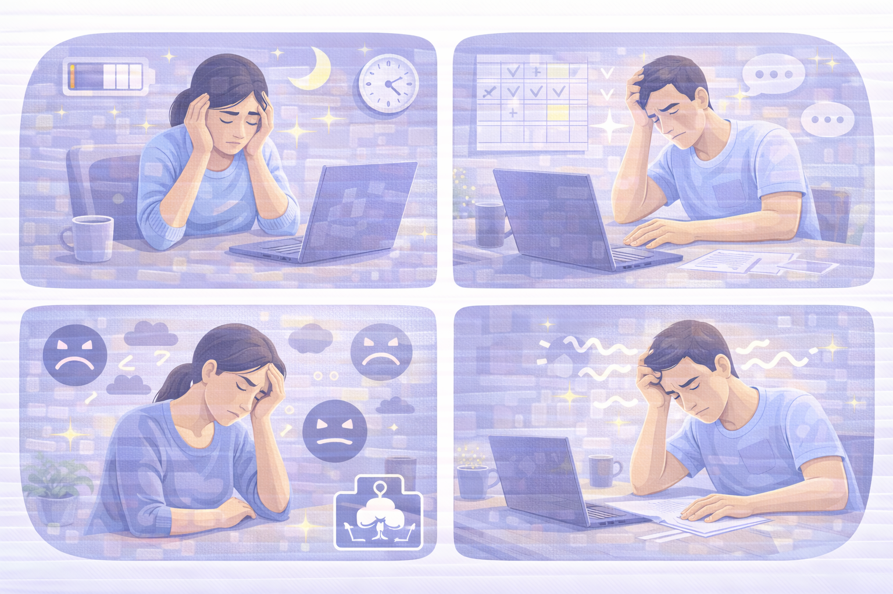
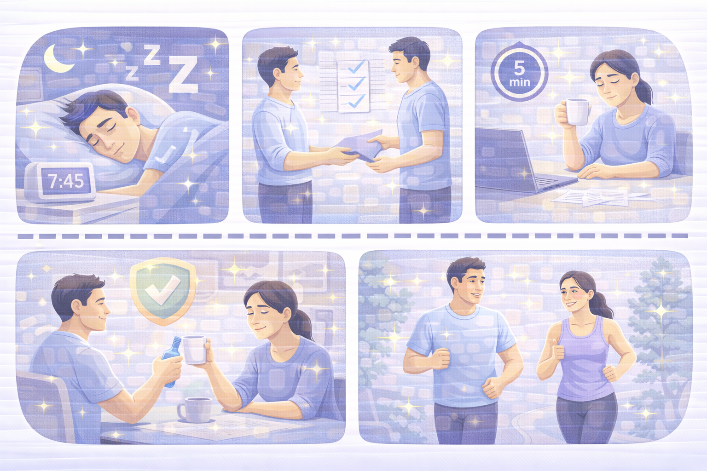
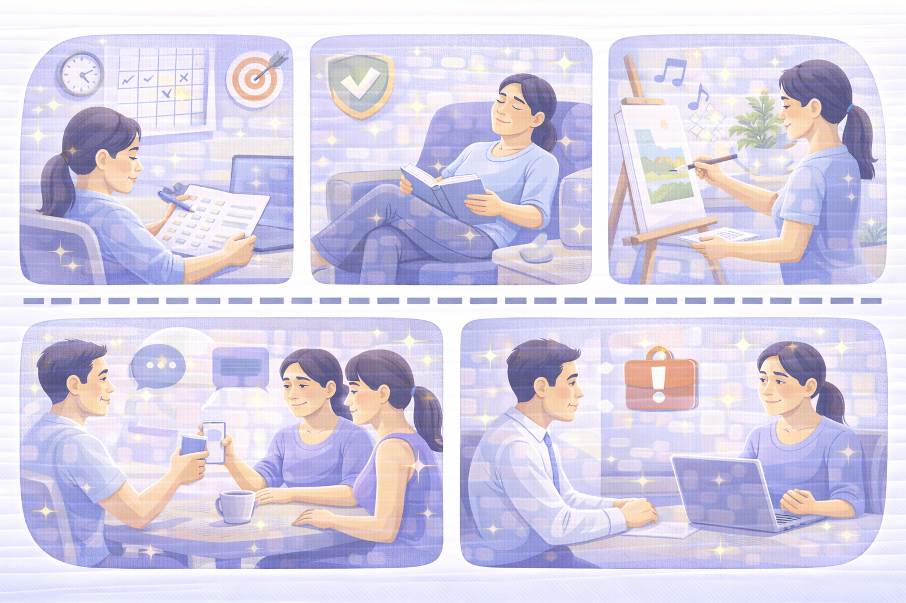

Професійне вигорання
Що таке вигорання, як його розпізнати та що робити, щоб повернути ресурсний стан.

Ознаки професійного вигорання
Вигорання — це емоційне та фізичне виснаження, яке виникає через тривалий стрес.
- Постійна втома навіть після відпочинку.
- Втрата інтересу до роботи.
- Дратівливість, апатія, відчуття безсилля.
- Зниження продуктивності.
- Порушення сну і концентрації.
Основні причини
Вигорання рідко виникає раптово — зазвичай це результат накопичення факторів.
- Перевантаження та великий обсяг задач.
- Відсутність підтримки в команді.
- Ненормований графік.
- Робота без чітких обов’язків.
- Сильний тиск або мікроменеджмент.

Як відновитися
Відновлення — це системна робота з тілом, психікою та режимом.
- Повернути режим сну (7–9 годин).
- Скоротити навантаження, делегувати частину задач.
- Робити перерви під час робочого дня.
- Чітко розділяти роботу та відпочинок.
- Відновити фізичну активність.

Профілактика вигорання
Запобігти вигоранню простіше, ніж відновлюватися після нього.
- Планувати навантаження реалістично.
- Відпочивати без почуття провини.
- Регулярно змінювати активність.
- Підтримувати соціальні контакти.
- Говорити з керівником про проблеми.